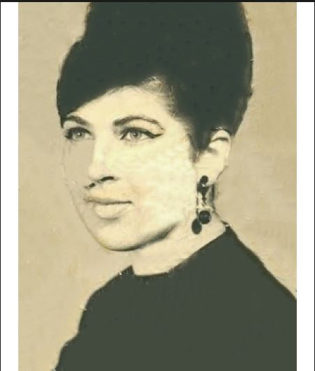
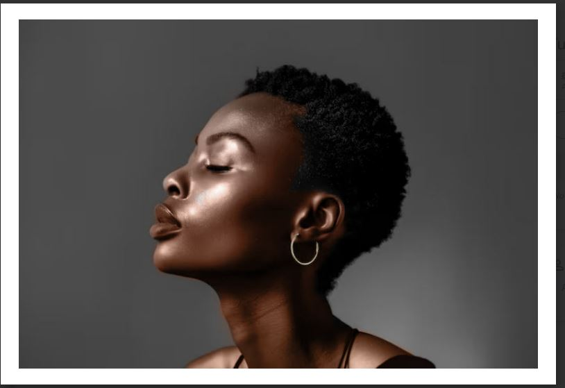
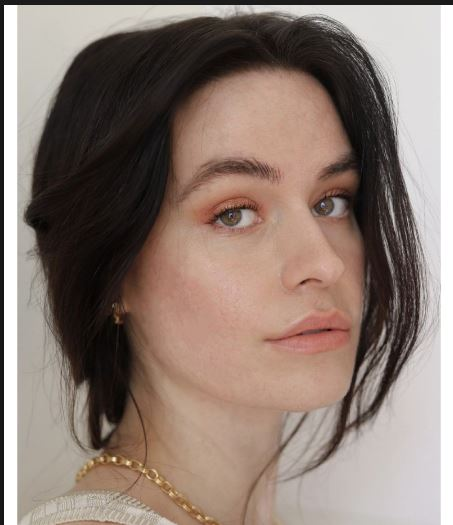
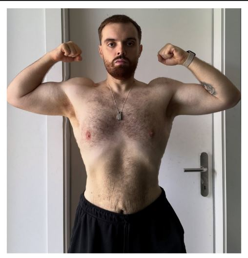
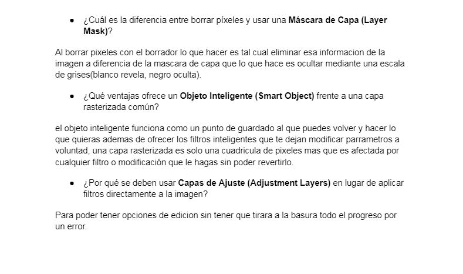
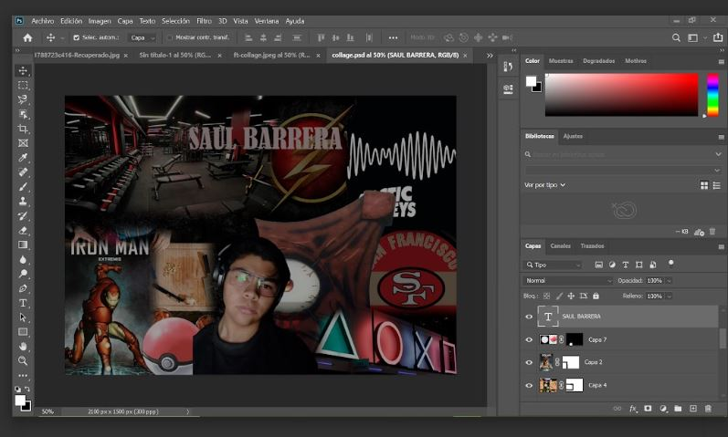
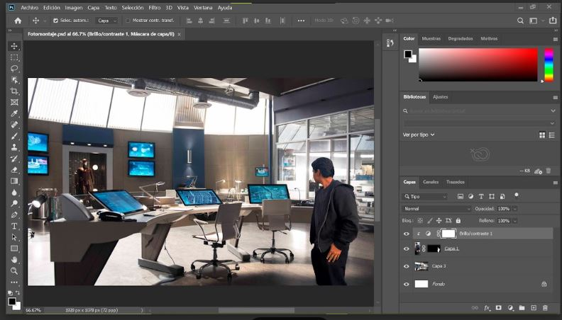

01
Participación 2: Conociendo Photoshop
Se hizo una investigacion sobre photoshop para tener una introduccion teorica al programa.
Se hizo una investigacion sobre photoshop para tener una introduccion teorica al programa.

Se restauro una foto vieja y rota con herramientas basicas como el pincel corector

Se aplico color a una foto vieja o en blanco y negro usando funciones como capas y mascaras

Limpiamos una piel con imperfecciones con herramientas como parche.

Usando imagenes inteligentes para adelgazar a una persona
Hicimos un video damotrando como usar ciertas funciones en photoshop como las mascaras, asi como un documento donde se explique lo dicho en el video

Se hizo un video dando recomendaciones de como ser mas agil en Photoshop.
Se analiso un poster de pelicula para identificar la amyor cantidad de fotomontaje posible.

Se hizo un collage que represente tu personalidad con todas las herramientas usadas antes.

Se hizo un foto montaje donde te pones a ti sobre un paisaje haciendo que paresca real.